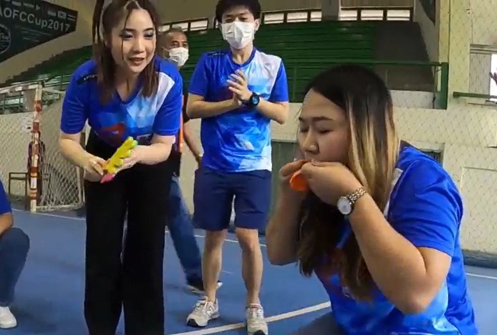

นัท..
พี่รู้สึกประหม่า 555+ ใจไม่กล้าถามนัทตรงๆเลย กลัวไม่ใช่ดังที่ใจคิดไว้ เลยทำ page นี้ขึ้นมา สื่อสารกับนัท ไม่ให้เคลียดเกินไป อย่างน้อยก็ได้ทำตามความรู้สึก ส่วนคำตอบออกมาแบบไหนพี่ Ok หมด
เล่าก่อน เราแทบจะไม่ได้คุยหรือติดต่อกันเลยเนาะ แต่พี่จำภาพงานกีฬาสีได้ น่าจะเป็นภาพแรก ที่เห้นนัท พี่กำลังถ่ายวีดีโอ นัทก็ชอบมองกล้อง เลยมีจังหวะนึง สบตา 1 วิ 555+
วันนั้นนัทตัวเล็กๆเป็นรีดอยู่หน้าสุด

ยิ่งตอนเชียร์เป่าแป้งลูกโป่งเสียงดังมาก กริ๊ดเสียงดังอยู่คนเดียว 555+ แต่ในงานกีฬาก็ไม่ได้คุยอะไรกัน
ได้แต่เก็บไว้ในใจว่า ยายนี่เป็นใคร อยู่ฝ่ายไหนกัน ทำไมดูมีพลังงานเยอะ เอเนอร์จี้สูงดี ต้องสืบ 555+
หลังจบกีฬาสีก็ไม่ได้เจอกันเลย มีแต่ทักมาถามเรื่องงาน1-2 คร้ังเอง และมีแต่เห็นแว๊บๆ ช่วงพักกินข้าว เดินผ่านลานจอด เพราะตอนน้ันพี่ยังไม่ได้ลงมานั่งช้ัน 2
ช่วงพี่มาอยู่ชั้น 2 ก็คิดว่านัทน่าจะมีแฟนแล้ว เห้นนิ้วเหมือนจะล๊อคแชทโทรศัพย์บ่อย 555+ ช่วงมานั่งชั้น 2 พอเห็นหน้าเห้นตากันบ้างเวลาเดินสวนกัน บ้างคร้ังก็จะพยายามชวนคุยแต่ก็ได้แค่ประโยคสั้น "ไปไหน ไปซื้อข้าว จบ" 555+
พอมาอยู่ช้ัน2 ก็มีปัญหาบ่อยขึ้นจึงได้คุยุกัน เรื่องงาน แอบดีอยู่ เจอตัวกันเป็นๆ เวลานั้นก็แอบพยามสังเกตการณ์อยู่ห่างๆ 555+
ตัดภาพมา ในงานปีใหม่ อยู่ดีๆ นัทก็มาชนแก้วเฉย อยู่ office คุยกันก็น้อย แทบไม่ได้คุยเรื่องส่วนตัวเลย แต่ในงานมาชนแก้ว สงสัยเมา 555+ แต่พี่ฉุดคิดละ ยายนัทนี่ยังไงกัน หรือต้ังใจมาชนแก้วกับน้องฝึกงาน พี่ยืนอยุ่ตรงนั้นพอดีก็เลยตามเลยหรือเปล่าในใจคิดนะ ตอนนั้น แต่ก็แอบดี เก็บไว้ในใจ
แต่ความรู้สึกดีๆเกิดขึ้นกับนัท หลังจบงานปีใหม่ ก่อนกลับนัทมารอใครสักคน พี่ยืนอยู่ตรงนั้นก็ได้คุยกันนิดหน่อยเรื่องของรางวัล นัทยืนมือมา ขอ 2000 พี่ก็ยืนมือไปกับความว่างเปล่า และได้มารู้ว่านัทกำลังจะออก ตกใจเลย อ้าว จริงรึ?
ก็แปลกดีนะ จนผ่านไป 2 ปีจนนัทลาออก ไม่เคยคิดว่าพี่จะมาทำอะไรมาแบบนี้
ท้ายนี้ ถ้าคำตอบ ไม่ทำให้ใจฟู มิตรภาพเราก็จะไม่เสียไป พี่รับปาก
ตื่นเต้นแล้ว ไหนๆ ก็ไหนๆ ละ เริ่มกันเลยเนาะ
...